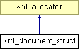

Main Page
Namespaces
Data Structures
Files
Data Structures
Data Structure Index
Class Hierarchy
Data Fields
xml_document_struct Struct Reference
Inheritance diagram for xml_document_struct:

Public Member Functions
xml_document_struct
(
xml_memory_page
*page)
Data Fields
const char_t *
buffer
Constructor & Destructor Documentation
xml_document_struct::xml_document_struct
(
xml_memory_page
*
page
)
[inline]
Field Documentation
const char_t*
xml_document_struct::buffer
The documentation for this struct was generated from the following file:
src/
pugixml.cpp
All
Data Structures
Namespaces
Files
Functions
Variables
Typedefs
Enumerations
Enumerator
Defines
Generated on Thu Mar 14 17:57:49 2013 for accidentalnoise by
1.6.1-20091027
 1.6.1-20091027
1.6.1-20091027